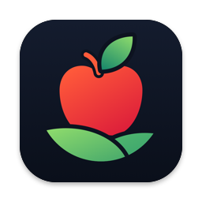
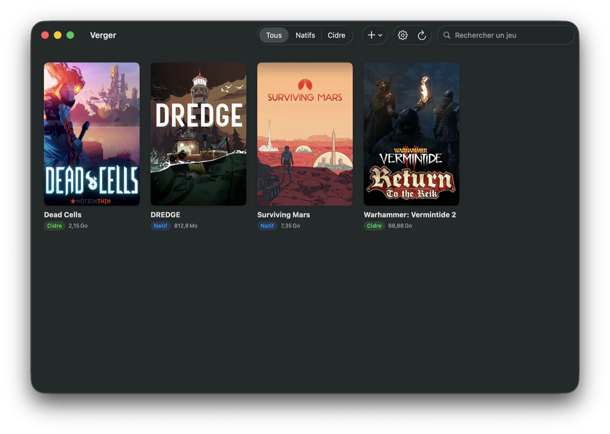
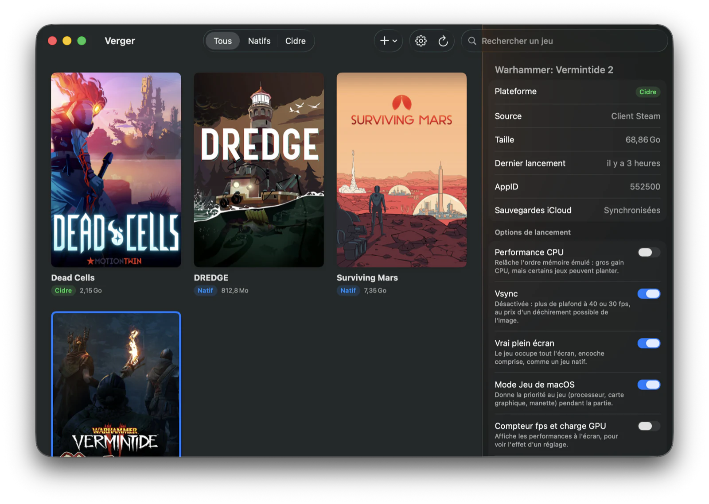
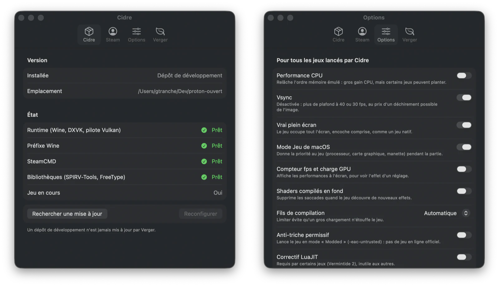

La bibliothèque de jeux pour Mac qui fait tourner tes jeux Windows.
Verger installe, règle et lance tes jeux, ceux de ton compte Steam comme les autres, sans jamais ouvrir un Terminal.
Pour Mac Apple Silicon, macOS 26 (Tahoe) ou plus récent.


Une bibliothèque, tous tes jeux
Un clic sur une carte ouvre sa fiche, un double-clic lance le jeu.
-
Installer un jeu Steam
Verger liste les jeux de ton compte qui ne sont pas installés. La version Windows se télécharge par Cidre, avec son avancement ; quand une version macOS existe, c'est elle qui est proposée d'abord.
-
Ajouter un jeu non-Steam
Choisis son
.exe, il entre dans la bibliothèque. Un installeur (GOG, itch…) se lance aussi depuis Verger. -
Suivre les mises à jour
Un jeu en retard sur la dernière version publiée porte l'étiquette « Mise à jour ».
-
Choisir les jaquettes
Celles de Steam, une image à toi, ou une recherche dans SteamGridDB (clé gratuite), y compris pour les jeux non-Steam.
Des options de lancement lisibles
Chaque option dit ce qu'elle fait gagner et ce qu'elle risque : performance CPU, vsync, vrai plein écran, Mode Jeu de macOS, overlay Steam, compteur de performances, compilation des shaders en fond.
- Ce que Cidre livre
- Tes réglages généraux
- Ce que tu forces pour un jeu
Du plus faible au plus fort. Une pastille marque ce que tu as réglé toi-même ; un clic y renonce.

Tout se règle dans l'application
- Cidre
- Sa version, l'état de chaque pièce, sa mise à jour.
- Steam
- Se connecter, se déconnecter, changer de compte, dans une fenêtre. Verger relaie ton mot de passe à SteamCMD, l'outil de Valve, et ne le garde pas.
- Options
- Les réglages généraux de lancement.
- Verger
- Sa langue, français ou anglais, et sa propre mise à jour depuis GitHub.

Installer
-
Télécharge
Récupère
Verger.zipdepuis la dernière version sur GitHub et décompresse-le. -
Clic droit → Ouvrir
La première fois seulement : l'application n'est pas notarisée par Apple, un double-clic serait refusé.
-
Laisse Verger installer Cidre
Verger propose d'installer le moteur (environ 400 Mo). Accepte, il s'occupe du reste.
Configuration requise
- Un Mac Apple Silicon
- macOS 26 (Tahoe) ou plus récent
- Le client Steam, pour les jeux Steam
Sous le capot : Cidre
Verger est l'interface. Le moteur s'appelle Cidre : quatre projets assemblés pour faire tourner des jeux Windows en arm64 natif, sans Rosetta.
Verger n'en contient aucun binaire. Il installe Cidre et le tient à jour tout seul ; tu n'as rien d'autre à installer.
Le dépôt de Cidre sur GitHub →- FEXexécute le code x86 des jeux sur arm64
- Winefait tourner les programmes Windows
- DXVKtraduit Direct3D en Vulkan
- KosmicKrisple pilote Vulkan, au-dessus de Metal
Ce que Verger ne fait pas (encore)
- Tous les jeux ne tournent pas. Cidre est jeune ; la compatibilité se vérifie jeu par jeu.
- Pas de jeu en ligne protégé par Easy Anti-Cheat. Certains jeux proposent un mode sans anti-triche (le « Modded Realm » de Vermintide 2) : c'est l'option « Anti-triche permissif ».
- Pas d'overlay Steam dans les jeux Windows (Maj+Tab, notifications en jeu).
- Connexion Steam par mot de passe, relayé à SteamCMD. Pas encore par QR code.
- Application non notarisée par Apple : d'où le clic droit → Ouvrir au premier lancement.
- Pas d'écran pour gérer les sauvegardes. Cidre synchronise celles de quelques jeux Windows vers iCloud, mais Verger ne permet pas encore de les gérer.